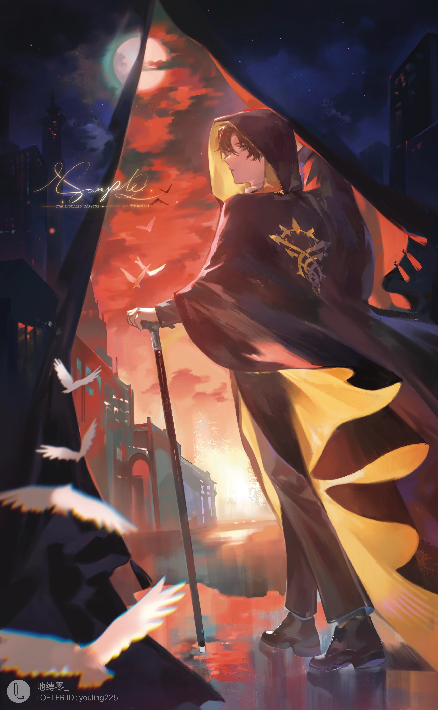

Klein Moretti
Klein Moretti is the main protagonist of
Lord of the Mysteries,
and a character of Circle of Inevitability.
"He" is the current owner of the Sefirah Castle, and Half a Lord of Mysteries with authorities
over the Fool, Door and Error Pathways. "He" is also the mysterious leader of the Tarot Club
known as The Fool and a Transmigrator who comes from the modern era. From year 1352 of the
Fifth Epoch, "He" became the God of the Church of the Fool.

Three Reasons I admire the character
- He is humorous, polite, mature, and gentlemanly. He is always caring to people around him.
- He is always been a guardian. "We are guardians, but also a bunch of miserable
wretches that are constantly fighting against threats and madness. "
He is brave to carry up the duty of saving the world against Outer Gods even though
what he want at the beginning is only going back to home or living a peaceful life.
- He is cute!! He is so pretty, handsome, and strong.